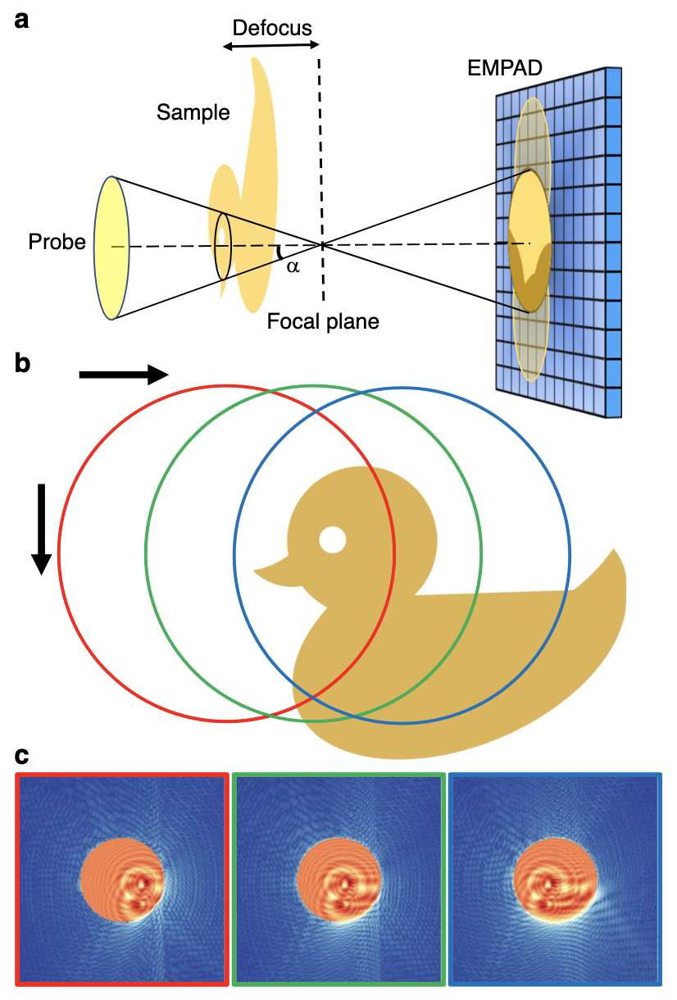

Ptychography is an computational imaging
technique built on methods from scanning transmission electron/X-ray
microscopy (STE/XM) and coherent diffraction imaging (CDI) (1,2). A ptychography experiment
records multiple interference patterns from overlapping
illuminations of a sample, and solves the phase problem to
reconstruct a complex image of the sample. Ptychography has proven
experimentally successful with both X-rays (3–5) and electrons (6–8), achieving record-breaking
resolutions.
Implementations of ptychography may vary considerably in the
choice of inverse solver algorithms and the
methods they use to achieve stronger experimental robustness. However,
they all share the common notion of overlapping illuminations by
known probe positions.
Experimental setup

Schematic of defocused probe electron
ptychography. a Experimental setup. The focus of the electron
probe is downstream from the sample at a distance defined by the
defocus value. The diffraction pattern on the detector (EMPAD) shows
a shadow image in the bright-field disk. b A
diagram of the scan procedure. c Three diffraction
patterns simulated when the probe is illuminated at the positions
circled in b, which show the shadow images in the
bright-field disk shifting accordingly with the probe position. The
speckles in the dark-field region contain high frequency
information.
A basic ptychographic experiment consists of a a focused beam
(probe) scanned across a sample of interest. As in the schematic
above, the probe illuminates a portion of the sample, which is
propagated to a pixel array detector where a macroscopic
interference pattern is recorded. In this sense, ptychography
closely resembles (and is often called a form of) CDI.
However, an important distinction is that ptychography does not
require the usual oversampling condition fundamental to CDI (1). Instead, ptychography requires
that the probe shifts laterally to illuminate another overlapping
portion of the sample. These overlapping “views” and their
corresponding interference patterns make a 4D dataset, a method
familiar to 4D-STEM (10).
The final (and arguably the most important) step is to recover
the phase part of the interference patterns and reconstruct the
sample. This is done computationally, with many algorithms being
adopted from conventional phase retrieval in CDI to accomodate for
the probe shifts. Recent successes in ptychography have used
iterative algorithms, while also developing methods for robustness
against experimental error and faster convergence (1).
Basic mathematical model
Notation
Coordinates
Real-space coordinates: \(\mathbf{x}\)
Reciprocal-space coordinates: \(\mathbf{k}\)
Reconstruction
The “object” (sample): \(O\)
The “probe”: \(P\)
The reconstructions are denoted with a carat: \(\hat{O}\), \(\hat{P}\)
The \(n\)th iteration is in
parentheses: \(\hat{O}^{(n)}\),
\(\hat{P}^{(n)}\)
The scan positions are indexed with \(j\): \(\mathbf{X}_j\)
The exit waves: \(\psi_j(\mathbf{x})\)
The measured intensities: \(I_j(\mathbf{k})\)
To build a reconstruction algorithm, we must have a mathematical
model of the experiment. The core of ptychography can be summarised
as:
The decomposition of the exit wave \(\psi\) as a product of the object \(O\) and a focused probe \(P\).
The lateral shifts \(\mathrm{X}_j\) between the object \(O\) and probe \(P\).
The exit waves propagate to the detector plane, where the
interference patterns are recorded but the phase is lost. Assuming
Fraunhofer diffraction, this is the modulus squared of its Fourier
transform.
These two equations roughly represent the constraints that let us
solve the phase problem; each in the real domain and reciprocal
domain respectively.
Reconstruction algorithms
Modelling the forward propagation is simple; however, going
backwards is tricky. This is an inverse problem, where one wants to
recover the object function \(\hat
O\) constrained by the known interference measurements \(I_j\) and scan positions \(\mathbf{X}_j\). Perhaps surprisingly,
the real space constraint of shifting illuminations provides enough
information for the solution to be well-behaved (1). Here I will restate a brief
history and survey of ptychography algorithms given by Rodenburg and
Maiden in (1). Detailed explanation with code
examples can (hopefully, in the future) be found by following the
links.
Inverse solvers
The first type (called Class 1 by Rodenburg and Maiden) of
algorithms are those that directly solve for the phases. Originally,
ptychography was coined in 1970 by Hergel and Hoppe (11), where they introduced a method
of phase retrieval by exploiting the excess information in
overlapping Bragg disks of a crystal diffraction experiment.
However, this has little to do with modern ptychography, which uses
overlap in real space instead. This line of reasoning started with
Bates and Rodenburg (12,13) by attempting an analytic
solution, called Wigner Distribution Deconvolution (WDD).
Beginning with the Ptychographic Iterative
Engine (PIE) algorithm by Rodenburg and Faulkner (14), iterative methods for
ptychography started gaining popularity. PIE is a natural extension
of conventional CDI phase retrieval algorithms that solve for a
ptychographic dataset, where the additional constraint of overlap
was suggested to improve convergence.
After PIE, Guizar-Sicairos and Fienup developed a Conjugate
Gradient Descent (CGD) method (15), that solves globally rather
than piecewise like PIE. Another independent method was introduced
by Thibault et al. based on set projection, the Difference Map (DM)
(16). CGD and DM allowed the
simultaneous reconstruction of the object and probe, an important
feature of modern ptychography algorithms and one that improves
experimental robustness significantly. PIE was improved to solve for
the probe as well (17).
Relaxing assumptions
Robustness against experimental noise, which weakens the
fundamental assumptions of ptychography is also as important (if not
more) as the inversion algorithms. The following algorithms (Class
2) are those that relax these assumptions, which allow ptychography
to be experimentally viable.
The simplest of these is to account for random noise. Perhaps
hinted by CGD, ptychography can be reformulated as an optimization
scheme. It should come as no surprise that a statistical noise model
can be incorporated by using Maximum Likelihood Estimation (MLE),
shown by Thibault and Guizar-Sicairos (18). MLE can be computationally
expensive, however, so PIE or DM can first efficiently sweep the
solution space to find probable regions, while MLE can refine the
solution.
One improvement that radically improved the quality of
reconstruction was the introduction of mixed state ptychography by
Thibault and Menzel (19), which relaxes the fundamental
assumption of coherence. Introducing mixed states of the probe and
object via density matrices, they were able to connect ptychography
to quantum tomography. Allowing the beam to be partially coherent
can permit much more various and brighter sources of light/electrons
to be used.
The multiplicative assumption in real space, and the assumption
of known scan positions have also been relaxed by various methods.
The former can be tackled by effectively propagating the beam
through the sample with multi-slice ptychography (5), effectively achieving volumetric
imaging. Probe position refinement (20,21) can be done through various
optimization schemes.
References
1.
Rodenburg, J. & Maiden, A. in
Springer Handbook of Microscopy
(eds. Hawkes, P. W. & Spence, J. C. H.) 819–904 (Springer
International Publishing, 2019).